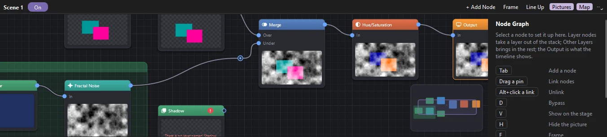

Animation
Node graphs
A timeline's layers normally stack, top over bottom. A node graph composites them instead: each layer you take out of the stack becomes a picture that flows through effect, merge, matte and transform nodes into the Output, and the Output is what the timeline shows, on the stage and in everything you export.

Start a graph
Choose Window › Node Graph. The panel shows the graph of the timeline you are editing: the scene, or the symbol you are inside. A timeline with no graph shows Create Node Graph, which makes one with two nodes: Other Layers linked to the Output. Nothing on the stage changes yet, since Other Layers brings in every layer, stacked as usual.
The On switch at the top turns the graph off and on. Off, the layers stack as usual and the graph is kept for later. ⋯ › Remove Node Graph takes it away.
Nodes
| Kind | Nodes |
|---|---|
| Input | Layer takes one layer (or a folder's layers) out of the stack to work on alone. Other Layers brings in every layer no Layer node took. Solid Color fills the picture with a color. |
| Combine | Merge puts one picture over another by a blend mode (Normal, Multiply, Screen, Overlay, Darken, Lighten, Add, Subtract, Difference, Hard Light, Soft Light, Color Dodge, Color Burn) at an opacity. Composite stacks any number of pictures, its first input on top; it gains an input each time you use its last. Mix fades from one picture to another. Matte shows a picture through another by its alpha or brightness, or their inverse. |
| Transform | Transform moves, scales and turns the picture about the middle of the stage. Opacity fades it. |
| Effects | Every adjustment effect is a node too: blurs and Glow; color (Color Correction, Tint, Levels, Curves, Hue/Saturation, Tritone, Vignette, Grain, Chromatic Aberration); distortions (Turbulent and Wave Displace, Bulge, Ripple, Bend, Displacement Map, which takes its map through a second input); generators (Gradient Ramp, 4-Color Gradient, Fill, Outline, Fractal Noise); and transitions (Linear and Radial Wipe, Venetian Blinds, Block Dissolve). See Adjustment effects. |
| Utility | Reroute is a point a link passes through, to tidy the graph. |
| Output | What the timeline shows. There is one, and it cannot be deleted. |
A Layer node that does not reach the Output leaves its layer in the stack, so a node you are still wiring never makes a layer vanish.
Working in the graph
- Add a node: press Tab, double-click empty space, click + Add Node, or right-click. Type a few letters of its name to find it; Up, Down and Enter pick. The nodes you added last come first.
- Link nodes: drag from a node's output (on its right) to another's input (on its left), or the other way. Drop a link on a node to use its first free input. Drop it on empty space to add a node there, already linked: the list shows only the nodes that fit.
- Unlink: drag a link off the input it goes into and let go on empty space, Alt+click it, or click it and press Delete.
- Put a node into a link: drag a node that has no links onto a link; the link lights up, and dropping the node puts it in between.
- Move nodes: drag them. A node lines up with the nodes near it, a dashed line showing which, and otherwise snaps to the grid; hold Alt to place it freely. Shift-click or Ctrl-click to select several, or drag a box round them.
- Find your way: scroll to zoom, drag with the middle or right button (or hold Space) to pan, F frames the selection and Home the whole graph. When part of the graph is out of view, a map in the corner shows it all; drag in the map to go there.
- Tidy: L (Line Up) sets the selected nodes, or all of them, in columns by how they link. B puts a backdrop behind the selection: a colored frame with a title, which moves the nodes inside it. Double-click a link to add a reroute point on it.
- Copy: Ctrl+C, Ctrl+V and Ctrl+D copy, paste and duplicate nodes with the links between them, also between timelines.
Looking at a node
Each node shows a picture of what it gives, on the frame you are on. H hides the picture of the selected nodes to keep them small; Pictures at the top hides them all.
To see one node's result full size, click the eye in its title, or select it and press V: the stage shows that node in place of the Output until you click the eye again, press Esc or close the panel. What you export always shows the Output.
D bypasses the selected nodes: each passes its first input through unchanged, drawn faded with a line straight through, to compare with and without it.
Settings and keys
Select a node to see its settings beside the graph. Drag a number, or click it to type, and use the slider for its range. Each setting has a diamond: click it to key the setting on the current frame, so it changes over time, as in the Behaviors panel. A filled diamond means a key on this frame; a colored hollow one, keys on other frames. Double-click a node's title, or edit the name at the top of its settings, to give it a name of its own; double-click a Layer node's picture to select its layer in the timeline.
Every change is one step to undo, and a setting dragged is one step.
Graphs in symbols
A symbol's timeline can have a graph of its own: enter the symbol and the panel shows its graph. Every instance of the symbol shows the graph's Output, so a glow or grade built once goes wherever the symbol does.
Other apps
The graph is kept in the FLA file in a setting other apps ignore: they show the timeline's layers stacked as usual, without the graph's effects. Saving says so. Phoenix's own exports (video, image sequences, GIF, SWF) show the graph's Output.